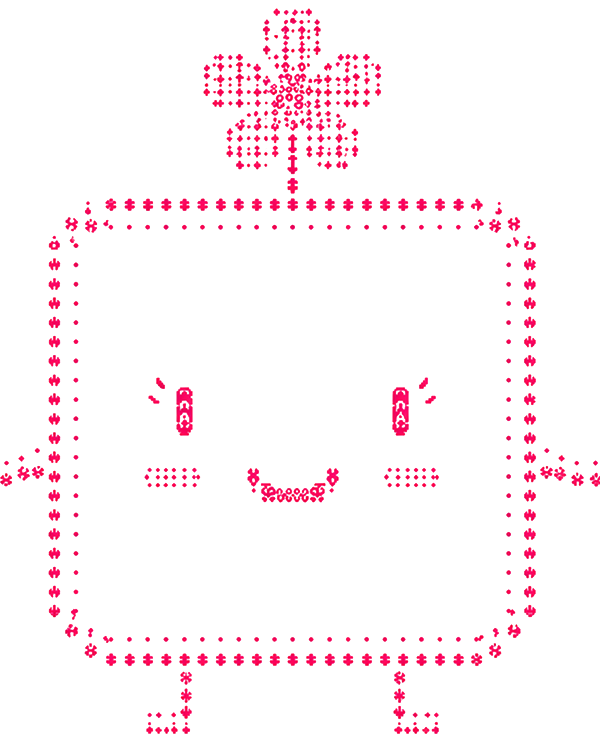

01 ✦ Quad
Q
uad
The AI employee for trust work
The AI employee that turns company
evidence into customer‑ready trust work.
✦ Finds the gaps
✦ Proves the answer
✦ Ships the fix with approval
Quad
Audit everything. Trust what matters.

02 ✦ Team
Built by a team that understands agents, startups, and trust.
Stephen Hung
14× hackathon champion. AI/ML engineer at Walmart.
Andrew Liu
Startup COO. Scaled operations at Wadhwani AI and Workday.
Silas Wu
Information systems. Architects agentic business workflows.
Madison Zhan
Venture scout at a $500M pre-seed fund. Ran operations and design across multiple startups. Leads Berkeley's startup club.
Two deep builders plus
business and capital instinct.
QuadTeam
03 ✦ The problem
Enterprise deals stall when companies have to prove they're trustworthy.
Security posture
Compliance
Privacy
Product claims
Customer diligence
The answers exist, but they're scattered across
policies, repos, tickets, dashboards, and people's heads.
So teams waste hours reconstructing proof instead of building.
QuadThe problem
04 ✦ The insight
Everyone has the model.
Nobody has the trusted context.
Generic AI can draft an answer.
But enterprise proof work requires:
✦ Trusted company context
✦ Grounded evidence
✦ Human approval
✦ Replayable execution
Without that, AI stays a demo.
QuadThe insight
05 ✦ The solution
An AI employee for enterprise proof work.
01
Find evidence
Pull from your company brain and systems.
✦
02
Audit gaps
Check against standards and claims.
✦
03
Draft the fix
Answer or remediation, with sources.
✦
04
Human approval
Nothing ships without a person.
✦
05
Ship trust packet
Customer-ready proof, packaged.
It audits your company against your real evidence, finds gaps, drafts the fix, waits for approval, and packages the proof.
Not advice.
Finished work, with receipts.
QuadThe solution
06 ✦ The differentiator
Other AI tools give you an answer.
Quad shows its work.
01 ✦ Proof
Evidence-backed
Every finding carries its source and a proof score.
02 ✦ Control
Approval-gated
Quad drafts. A human approves. Nothing acts on its own.
03 ✦ Audit
Replayable
Every run is event-sourced and can be replayed, step by step.
Quad only stands behind
what it can prove.
QuadThe differentiator
07 ✦ How it works
Built like production software, not a magic demo.
Reasoning layer
Claude
Reasoning, synthesis, and structured judgment.
Evidence layer
Browserbase
Captures browser evidence behind every finding.
Memory layer
Supabase + pgvector
Durable company memory and retrieval.
Replay layer
Redis streams
Every event streamed, so runs are live and replayable.
Reliability and eval
Sentry · Arize · Phoenix
Failure recovery, reasoning traces, and evals.
Agent interface
Fetch bridge
Makes the same runtime callable as an agent.
✦ Every claim is tied to evidence
✦ Every action goes through approval
✦ Every run can be replayed
QuadHow it works
08 ✦ Trust by design
Built for work companies actually need to trust.
✦ 01
Backed by evidence
No finding without proof
✦ 02
Approval-gated
Nothing ships without a human
✦ 03
Data-minimized
Retrieves the smallest relevant evidence packet, never dumping the whole company context into a prompt
✦ 04
Fully auditable
Every run is replayable
✦ 05
Built deliberately
We wrote down what not to build before we built anything
QuadTrust by design
09 ✦ Vision
Trust packets are the first job.
The runtime does the rest.
Security questionnaires
RFPs
Vendor diligence
Onboarding
Support ops
Quad is the runtime for company-aware AI employees.
The moat is not the prompt. It is scoped company context, validated evidence, and trusted execution that compounds with every run.
QuadVision
10 ✦ Demo
Live
demo.
Evidence-backed
Approval-gated
Replayable
Run ✦ audit.acme.com
01 Start audit
05 Check proof score
02 Watch the run stream
06 Review the fix
03 Open a finding
07 Approve before ship
04 Inspect the evidence
08 Generate trust packet
QuadDemo